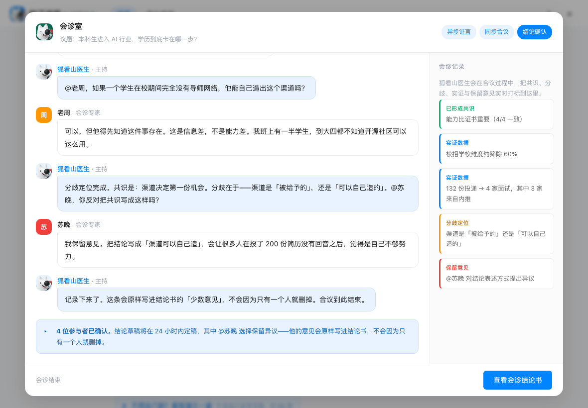
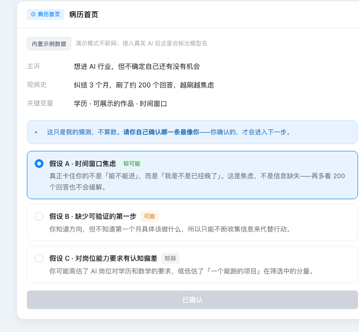
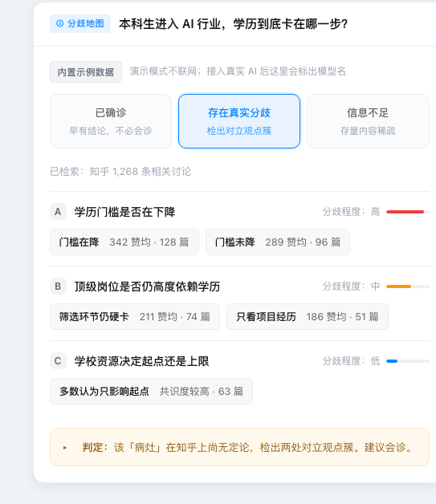
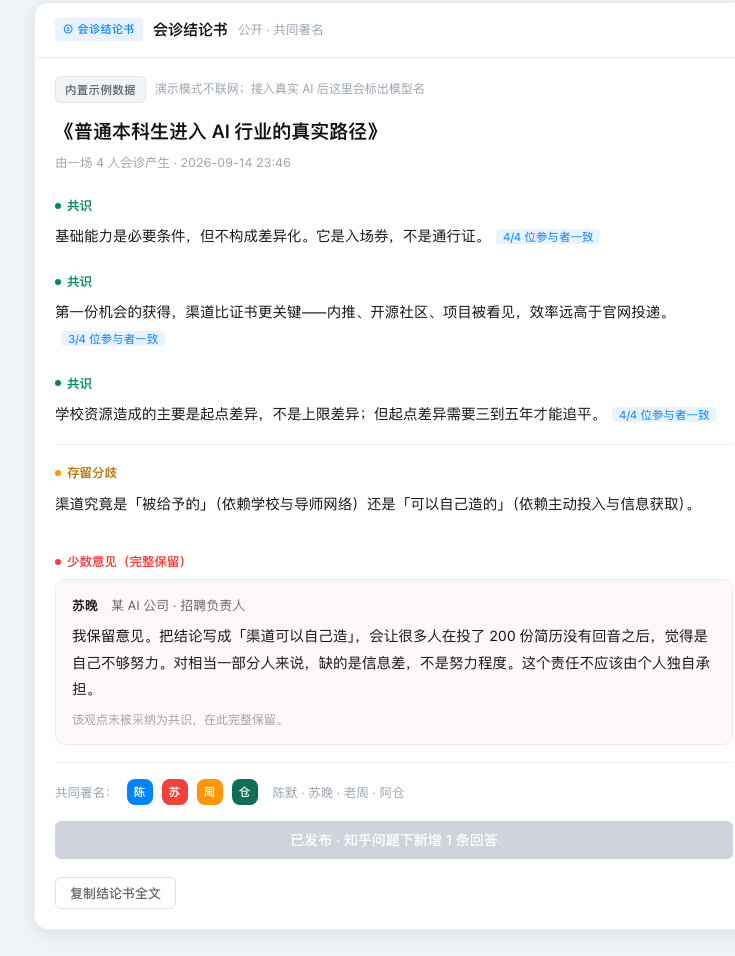

界面走「知乎蓝 + 大留白」的克制路线：不做装饰，靠层级、留白与圆角表达秩序感。
下面是从 css/app.css 直接提取的设计令牌，以及四张关键界面截图。
主色只有一个（知乎蓝），其余颜色只承担「语义」职责，不参与装饰。
| 项 | 取值 | 用在哪 |
|---|---|---|
| 字体族 | PingFang SC / 系统无衬线 | 全站；数字与代码用等宽 SF Mono |
| 正文 | 14–14.5px / 行高 1.75 | 气泡与卡片正文 |
| 小字 | 12.5–13.5px | 来源标注、副标题、提示 |
| 标题 | 16–18px / 600 | 卡片标题、文书标题 |
| 圆角 | 6 / 10 / 14px（小 / 中 / 大） | 按钮 / 输入框 / 卡片 |
| 投影 | 0 1px 2px ／ 0 4px 16px ／ 0 12px 40px | 三级层级：静态卡 / 浮起 / 浮层 |
| 栅格 | 内容最大宽 760px，左右留白 20px | 正文流；窄屏自动收窄，375px 无横向溢出 |
| 留白节奏 | 气泡间距 15px，卡片内边距 18–22px | 「大留白」是这套界面的主要设计手段 |
四张图分别对应产品的四个核心环节：把话说清楚 → 摸清情况 → 找到分歧 → 给出结论。



